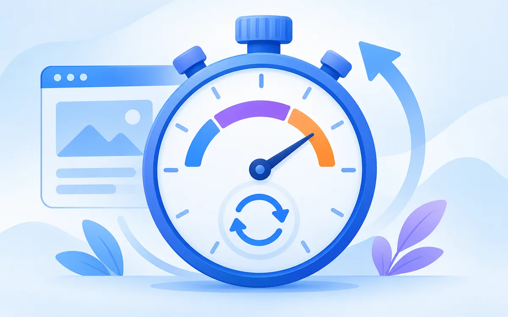
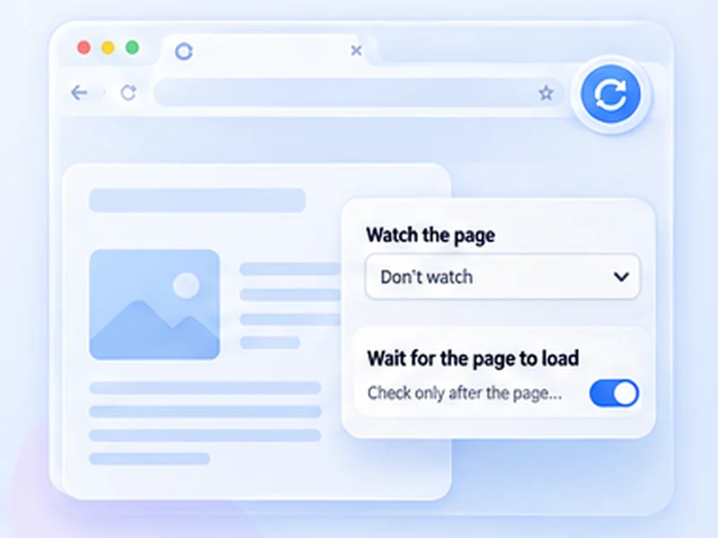
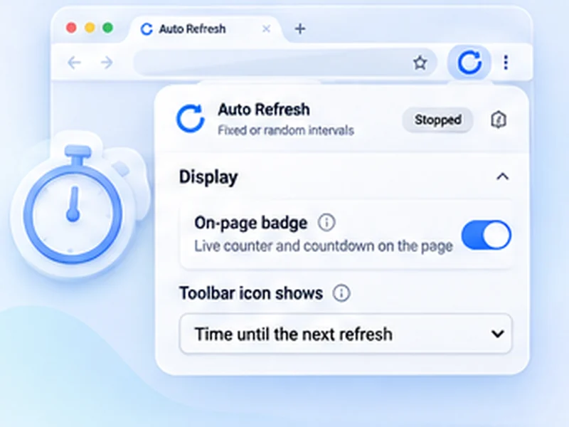

Refreshing, reloading and watching pages.
Short, practical posts: shortcuts, fixes, browser set-ups and ways to be told when a page changes.
Auto Refresh Chrome Without an Extension: What Works
Can Chrome auto refresh a tab without an extension? The honest answer, three workarounds and why most of them only reload once.
Read the post
Hard Refresh on Mac: Chrome, Safari & Firefox Shortcuts
The exact hard refresh shortcut for Chrome, Firefox, Edge and Safari on a Mac, plus what to do on a MacBook with no Ctrl or F5 key.
Hard Refresh vs Normal vs Empty Cache and Hard Reload
Three kinds of reload in Chrome: normal, hard and Empty Cache and Hard Reload. What each one does and when a stubborn page needs the third.
Chrome Ctrl+F5 and Force Reload: What Each One Does
Ctrl+F5, Ctrl+Shift+R, Shift+click and F5: which force reload shortcut Chrome uses, what changes between them and when to use each.

Hard Refresh on Windows and Linux: Every Browser
The hard refresh shortcut for Chrome, Firefox, Edge, Brave and Opera on Windows and Linux, plus what to do on Android, iPhone and Chromebook.

Why Does My Browser Keep Refreshing by Itself? 8 Causes
Page or tab reloading on its own? Eight real causes in Chrome and Firefox, from extensions and Memory Saver to a stuck F5 key, and how to fix each.
How to Stop a Website From Refreshing Itself in Chrome
How websites refresh themselves (meta refresh and scripts), what you can block in Firefox and Chrome, and workarounds that do work.
Auto Refresh in Firefox: Add-on and No-Add-on Methods
Firefox has no auto reload button. Here is how to refresh a tab on a timer with an add-on, what you can do without one, and how to stop it again.
Auto Refresh in Microsoft Edge: Free Extension Setup
Edge has no auto reload feature. Install a refresh extension from the Chrome Web Store, set a timer and keep a tab reloading. Steps and tips.

Auto Refresh in Brave: Install and Set a Timer
Brave runs Chrome extensions, so a free auto refresh extension works. Install it, set a timer and keep Brave's tab sleeping from interfering.
Auto Refresh in Opera and Opera GX: Step by Step
Opera and Opera GX can run Chrome extensions with one helper add-on. Here is how to install a free auto refresh extension and set a timer.

Best Auto Refresh Interval: 5 Seconds to 5 Minutes
How often should a page auto refresh? A practical guide to 5 seconds, 30 seconds, 1 minute and 5 minutes, and how to avoid hammering a website.
Auto Refresh Chrome Without an Extension: What Works
Can Chrome auto refresh a tab without an extension? The honest answer, three workarounds and why most of them only reload once.
Best Auto Refresh Extensions for Chrome: What to Compare
How to pick an auto refresh extension for Chrome: the features, permissions and privacy checks that matter, and where each popular option fits.
Website Change Detection: Free Ways to Get Notified
Five free ways to know when a web page changes, from RSS and site alerts to a browser extension, with the honest limits of each.
Back-in-Stock Alerts Without Paying for a Tracker
How to find out when a sold-out product is available again: use the shop's own alert first, then watch the page for in-stock text with a free tool.
Price Drop Alerts in Chrome: A Simple Free Method
Watch one product page and get alerted when its price changes. How to point a free Chrome extension at the price element, and what it cannot do.
Appointment Slot Checker: Catch Cancellations Calmly
How to be told when an appointment slot opens up on a booking page, using a free browser extension, and how to do it politely.

Ticket Alerts: Know When a Sale Opens or Tickets Return
Get notified when tickets go on sale or come back after a sell-out, without refreshing a waiting room and losing your place.

Auto Refresh WordPress While You Edit and Preview
Keep a WordPress front-end tab reloading while you work in another, so you see edits quickly. Settings for scroll position, cache and smart pause.

Auto Refresh and Rate Limits: Refresh Without Blocks
Why websites slow or block fast refreshing, and how to refresh politely with longer intervals, random ranges, limits and pauses.

Refresh a Page Every 5, 10, 30 or 60 Seconds in Chrome
Set any refresh time in seconds or minutes in Chrome: pick a fixed timer, use a random range, and add a limit so it stops by itself.

See New Job Listings First: Refresh and Alerts for Job Boards
Catch new postings on job boards and company career pages sooner by reloading a search results page and being told when a new job appears.

Watch an Online Auction: Keep the Price and Timer Fresh
Keep an auction page showing the latest price, bid count and time left, and be told when it changes, without bidding automatically.

Check Exam and Admission Results Without Refreshing All Day
Results day pages are slow and busy. Learn how to be told when a results or admission page goes live, and how to avoid overloading it.

Track an Application, Visa or Order Status Page Automatically
Get an alert when a status page changes from Processing to Approved, Shipped or Ready, instead of logging in to check every few hours.

Auto Refresh a Dashboard or Wall Display in Chrome
Keep a Grafana, Looker Studio, Power BI or ticket queue dashboard fresh on a wall screen or second monitor with a simple refresh timer.

Auto Reload Localhost in Chrome: A Quick Dev Preview Loop
See your changes without pressing F5 by reloading a localhost tab on a timer, with the cache bypassed and your scroll position kept.

Auto Refresh Without Losing What You Are Typing
How to keep a page reloading on a timer without wiping a form you are filling in, using Smart pause and refresh limits.

Auto Refresh Live Sports Scores on Pages That Do Not Update
Keep a scoreboard, league table or match page current by reloading it on a timer, and learn when the site's own live view is the better choice.

Get Alerts for New Marketplace and Apartment Listings
Be told when a new listing appears on a classifieds, marketplace or rental search page, without refreshing it by hand all day.

How to Auto Refresh a Page in Safari (and What to Use Instead)
Safari has no built-in auto refresh timer. Here is what your options are, and an easy way to get timed reloads and change alerts in Chrome or Firefox.

Auto Refresh a Web Page with HTML (Meta Refresh and JavaScript)
Make your own web page reload on a timer with one HTML tag or a few lines of JavaScript, and learn when an extension is the better tool.

Why Chrome Reloads Your Tabs When You Switch Back (Memory Saver)
If a tab reloads on its own after you leave it, it is probably Chrome's Memory Saver, not auto refresh. Here is how to tell and how to stop it.

How to Auto Refresh Multiple Tabs at Different Speeds
Watch several pages at once, each reloading at its own pace: start a timer per tab, save a profile for each job, and keep the total load sensible.

Auto Refresh Stock and Crypto Price Pages the Safe Way
Keep a watchlist or quote page current by reloading it on a timer, be told when a figure changes, and know when this is the wrong tool.

Catch New Freelance Projects Early on Marketplaces and Job Feeds
Be told when a new project or request appears on a freelance marketplace, so you can write a thoughtful proposal while it is still fresh.

Start and Stop Auto Refresh with a Keyboard Shortcut in Chrome
Use Alt + Shift + R to start or stop auto refresh on the current tab, and change the shortcut in Chrome or Firefox if it clashes with something else.

Auto Refresh for 30 Minutes, Then Stop: Time and Count Limits
Set auto refresh to end after a number of minutes or a number of reloads, so a forgotten tab does not keep going all night.

Is an Auto Refresh Extension Safe? What to Check Before You Install
A short checklist for judging any browser extension: permissions, network requests, accounts and privacy policy, with what Free Auto Refresh does on each point.

Auto Refresh or Page Watching: Which Should You Use?
A plain guide to choosing between a plain timer and a watch that stops and alerts you when something changes, with settings for each.
No posts match. Try another word or topic.
Skip the manual reloads.
Free Auto Refresh does it on a timer, for Chrome and Firefox.